Introduction
In this tutorial, we are going to create a lush valley using sample assets provided by Sickhead Games.
For this guide, the terrain will be created by importing a heightmap, opacity maps, and creating new materials.
Setup
This article was written using a newly generated project with the
Full Template, which ships with plenty of free assets for testing and
learning. For this specific tutorial, you will want to download a zip file containing additional assets for testing:
CLICK HERE TO DOWNLOAD THE ZIP FILE
None of the modifications you are about to make are
required for future tutorials, so feel free to create a new level or
use an existing one for testing. As long as you have access to existing
materials, you are good to go.
You will want to remove any existing TerrainBlocks, Waterblock, or GroundPlane since we
will be creating a terrain from scratch. To delete objects, use the Object Editor and select the object in the Scene tab and press the delete key
(click to enlarge)
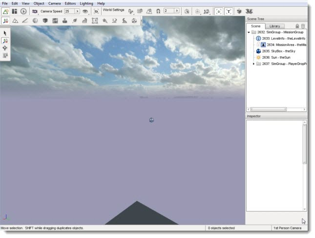
Heightmap, Opacity Layer, Terrain Textures
To create high-quality and professional looking terrain, you will want
to use a 3rd party external tool. Examples include
L3DT
and GeoControl.
These tools allow you to generate extremely detailed heightmaps that
can be imported by Torque 3D and generate terrain data.
Several assets are required to successfully import and render a high
quality heightmap. Most terrain generating applications provide proper
exporters to get the job done. First, we will cover what these assets
are. The example assets you downloaded in the previous section were provided by
Russell Fincher at
Sickhead Games.
The primary asset required is the heightmap, which is an
image used to store elevation data rendered in 3D by the engine. The
heightmap itself needs to be a 16bit greyscale image, with width/height of a power of two(256x256, 1024x1024), and
square. The lighter an area of a heightmap, the higher the elevation
will be in that terrain location.
Example Heightmap

Next, you will want to use an opacity map. This map acts as
a mask, which is designed to assign opacity layers. Opacity layers need
to match the dimensions of the heightmap. For instance, a 512x512 heightmap can only
use a 512x512 opacity map.
If the opacity map is a RGBA image, four opacity layers will be used
for the detailing (one for each channel). If you use an 8bit greyscale
image, only a single channel. You can then assign materials to the
layers. This allows us to have up to 255 layers with a single ID
texture map, saving memory which we can apply to more painting
resolution.
Notice that the following example Opacity Map resembles the original heightmap.
Example Opacity Map

Finally, of course we want to use textures to paint the
terrain. Instead of hand painting them, the opacity layer will
automatically assign textures based on what channel they are loaded
into. You will want to have three textures: a base (diffuse), a normal
map, and a detail mask.
Diffuse

Normal

Detail

The base represents the color and flat detail of the textures. The
normal map is used to render the bumpiness or depth of the texture,
even though it is flat. Finally, the detail map provides up-close
detail, but it absorbs most of their colors from the base map.
Importing A Heightmap
Now that you know what assets are required, we are going to import
our first heightmap. What we are going to do is create a highly
detailed valley scene, with snowcapped mountains. Since this section
focuses on the World Editor, and not 3rd party tools, you are going to
use sample assets. This will save time and allow you to learn the World
Editor functionality first.
You should have already downloaded the sample artwork used in this tutorial. If not, click
HERE to download a .zip file containing all of the
assets you need for this tutorial. Again, these high quality assets
were provided by Russell Fincher of
Sickhead Games. The team has
provided a lot of tech to Torque 3D, but they also strongly believe in
solid documentation and have been a big help.
Create a folder in the game/art/terrains directory of your
project called "sampleTerrain." Unzip the contents of the file you
downloaded into this new folder. You should have two heightmaps,
identical except for varying resolution. You will also receive three sets
of textures and opacity maps.
With your blank room running in the World Editor, click on File->Import Terrain Heightmap
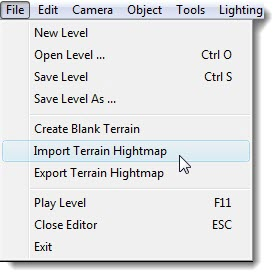
A floating dialog will appear and allow you to setup your new terrain before importing it.

Name:If you specify the name of an existing TerrainBlock in the
dialog Torque will update that TerrainBlock and its associated .ter file.
Otherwise Torque will create a new one.
Meters Per Pixel: Sets the size of the Terrain Block based on the imported heightmap.
For instance, if you set the Meters Per Pixel to 2 and the heightmap is 512x512 pixels, the
TerrainBlock's size will be 1024x1024 meters. Meters Per Pixel is a floating point value that
does not require power of 2 values.
Height Scale: Sets the maximum height in meters you want white (RGB: 255, 255, 255) in the heightmap to be.
Height Map Image: File path to .png or .bmp heightmap itself. Remember, this needs to be a 16bit greyscale image, power of two, and square.
Texture Map: This involves opacity layers, which need to match
the dimensions of the heightmap. If you add an RGBA image it will add 4
opacity layers to the list, one for each channel. If you add a 8bit
greyscale image, it will be added as a single channel. You can then
assign materials to the layers. If you do not add any layers the
terrain will be created with just the Warning Material texture.
Keep the name default value, theTerrain. Click the browse
button near Height Map Image to open a file browser dialog. Go to where
you saved the terrain files, game/art/terrains/sampleTerrain and open
the heightmap512.png.
(click to enlarge)
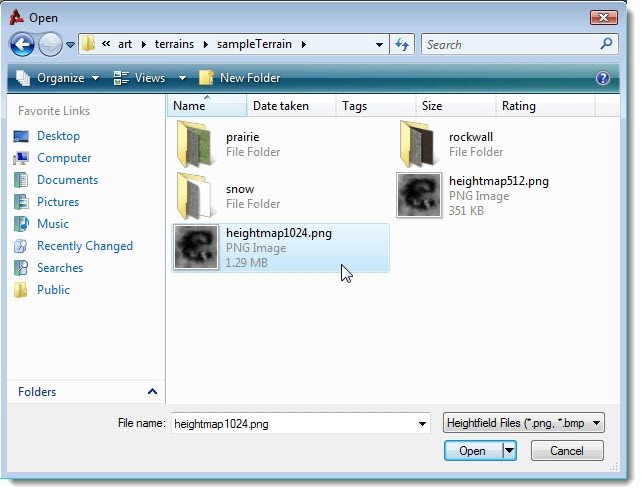
Next, click on the + button next to Texture Map to open
another file browser. This is where we are going to add our opacity
layers. Start by locating the prairie mask
(game/art/terrains/sampleTerrain/prairie/prairie_maskX.png). You can
choose the 512 or 1024, but you have to stick with that resolution for
the rest of the files we will be adding.
(click to enlarge)

Do not worry if you do not see the detail, as the mask is
supposed to be solid white. Repeat the process to add the rock wall
mask.
(click to enlarge)
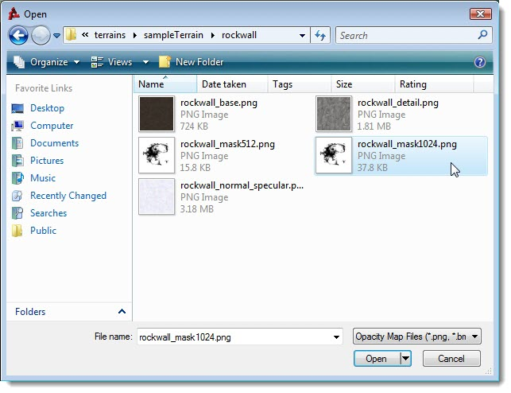
Perform this task one last time to add the snow mask.
(click to enlarge)
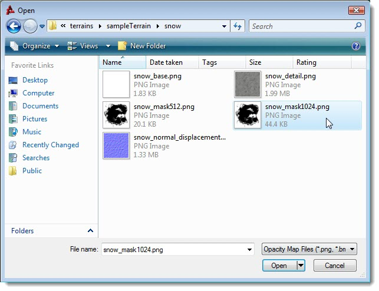
Your final settings should look like the following before continuing:
(click to enlarge)
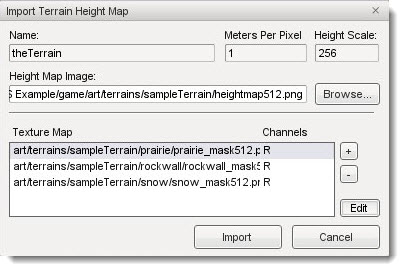
Now that our opacity layers have been added, we are going to
assign a material to each one. Click on the prairieMask layer, then click
the edit button in the bottom right. You will now see the Terrain
Materials Editor.
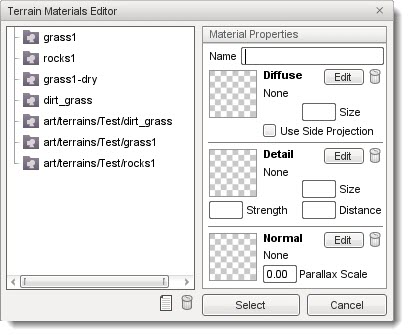
Click the New button, found at the bottom next to the garbage bin, to add a new material. Type in Prairie
for the name, then click the Edit button next to the Diffuse preview
box. Again, a file browser will will pop up allowing you to open the
base texture file for the prairie material. Alternatively, you can click the preview box itself, which is a checkered image until you add a texture.
(click to enlarge)

Once you have added the base texture, the preview box will
update to show you what you opened. Click on the Change button under
the Detail Map box. Using the file browser, open the detail map for our
prairie material.
(click to enlarge)
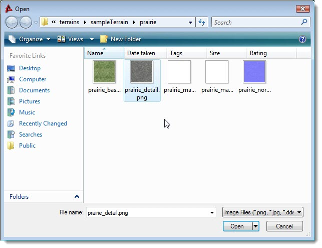
Next, click on the Change button under Normal Map box. Use the file browser to open the prairie normal map.
(click to enlarge)
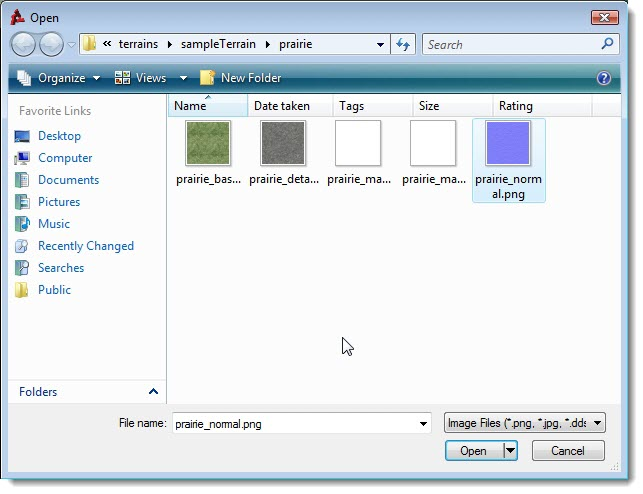
The Diffuse size controls the physical size in meters of the base texture. Before we are finished with this new material, set the
Detail Size to 2. This means that the material will be scaled to two meters on the terrain. On a terrain that is 1024 square meters,
the Prairie material will repeat a little less than 205 times. The Detail distance determines how far away from the camera must be
before the detail map renders. Additionally, change the Detail Strength to 2. This controls how the strength of Detail map blending
with the Diffuse map, a higher number. Your final material properties should look like
the following:
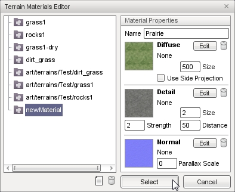
Click the Select button to assign the new Prairie material
to the opacity layer. Next, we will add the rock wall terrain material.
Back in the Import Terrain Height Map dialog, select the rockWallMask
opacity layer then click edit.
Repeat the process of creating a new terrain material, using the rock wall textures. Your final result will look like this:

Notice that I have set the detail size to 2, and the detail distance
to 50. We are going to add our final terrain material now. Back in the
Import Terrain Height Map dialog, select the snowMask opacity layer
then click edit. Repeat the process of creating a new terrain material,
using the snow textures. Your final result will look like this:
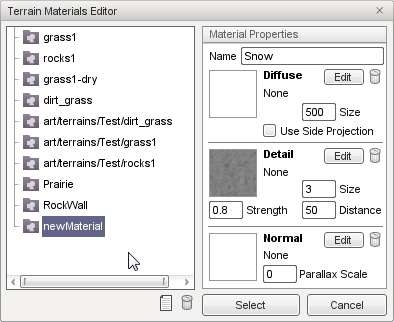
Now, we are all set to generate the terrain. Back in the
Import Terrain Height Map dialog, click on the import button. It will
take a few moments for Torque 3D to generate the terrain data from our
various assets. When the import process is complete, the new
TerrainBlock will be added to your scene (you might need to move your
camera to see it).
(click to enlarge)
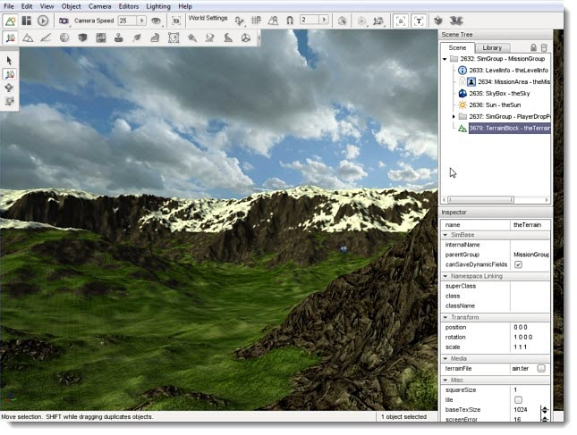
If you zoom in close to where materials overlap, you can notice the high quality detail and smooth blending that occurs.
(click to enlarge)
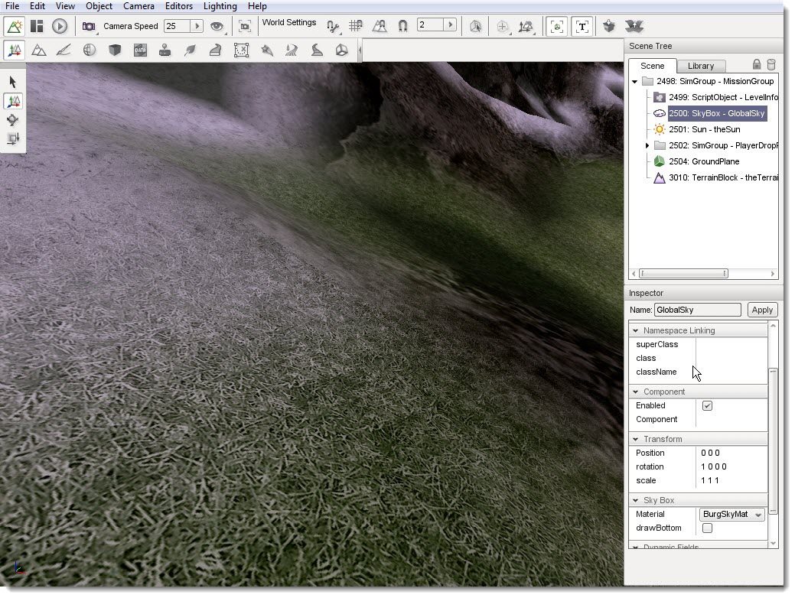
These last two shots are used to show you the scale of this
massive terrain, which retains its high level detail over several levels of
detail (LODs):
From a Distance
(click to enlarge)
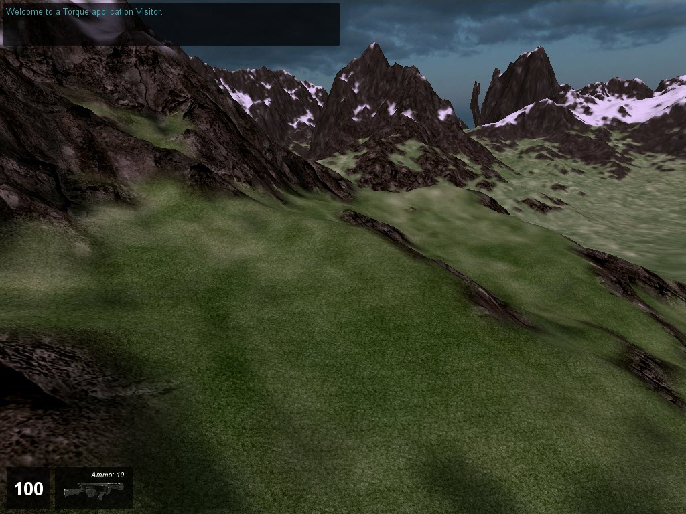
Compare to Player Scale
(click to enlarge)
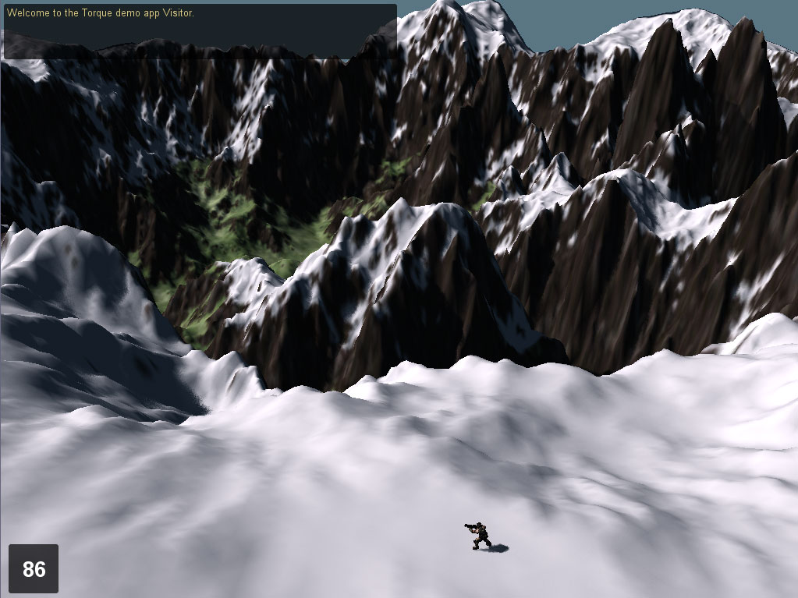
Conclusion
This tutorial showed you how to create a high resolution terrain from scratch, by importing a quality heightmap and opacity maps. Even after you have your terrain, you can continue to tweak
it using the Terrain Editor and Terrain Painter tools.
|
{kind=link}
{kind=link}
{kind=link}
{kind=link}
{kind=link}
{kind=link}
{kind=link}
{kind=link}
{kind=link}
{kind=link}
{kind=link}